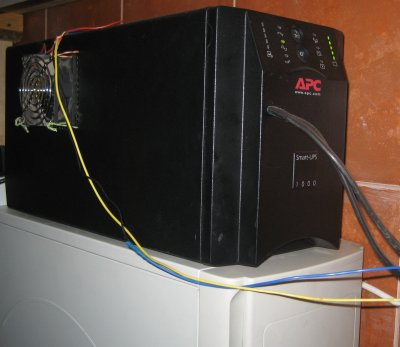
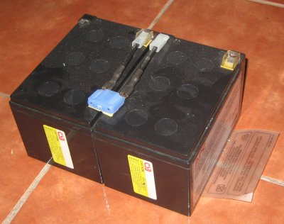
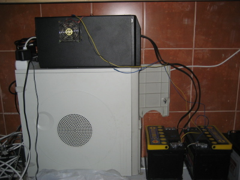
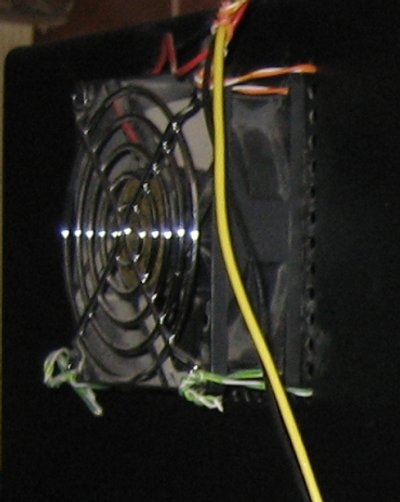
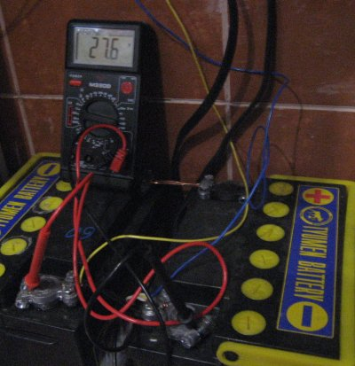
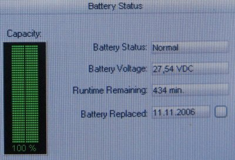
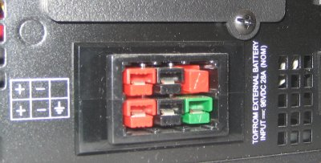

Источники бесперебойного питания от фирмы APC весьма надежны, но, как и все бытовые бесперебойники, имеют малое время работы на штатной нагрузке — 10-20 минут. Поэтому было решено увеличить емкость аккумулятора использованного в ИБП путем замены его на автомобильный.
В качестве бесперебойника был использован верно отслуживший три года APC SmartUPS 1000.

Рабочее напряжение батареи в этом бесперебойника 24 вольта, поэтому необходимо использовать два аккумулятора от автомобиля по 12 вольт. Автомобильные аккумулятры были взяты самые недорогие по соотношению цена/мощность из имеющихся на рынке — тюменские 6СТ60-АП3.
{kind=link}

Штатный аккумулятор, состоящий их двух батарей, был удален из корпуса ИБП и вместо него подключены толстые трехжильные медные провода сечением 4 квадрата. Большое сечение провода необходимо, ибо ток от аккумуляторов к бесперебойнику может достигать 100 ампер и более тонкие провода будут греться и могут расплавить изоляцию. Провод был выведен через специально пропиленное отверстие в лицевой панели.
{kind=link}

К аккумуляторам провод был подключен с помощью стандартных автомобильных клемм. Между собой аккумуляторы соединены последовательно с помощью короткого куска того же провода. При подключении аккумуляторов к бесперебойнику нужно строго соблюдать полярность и не перепутать плюс с минусом, что может привести к выходу всей конструкции из строя.
{kind=link}

Бесперебойники не расчитаны на многочасовую работу, поэтому для дополнительного охлаждения к отверстиям на боковых поверхностях корпуса были примотаны два 12 вольтовых компьютерных вентилятора, соединенных последовательно для получения напряжения питания 24 вольта. Направление потока воздуха было выбрано разнонаправленое — один вентилятор дует внутрь корпуса ИБП, второй наружу. Вентиляторы подключены к проводам идущим из UPS к аккумуляторам.
{kind=link}

Напряжение на полностью заряженных аккумуляторах в дежурном режиме соствляет 27.54 вольта по показаниям программы APC и 27.6 вольт по показаниям вольтметра на клеммах. Напряжение делится на оба аккумулятора равномерно и на один аккумулятор приходится 13.8 вольта. Это хорошее значение для автомобильной батареи, которая может очень долго проработать в таких условиях.
{kind=link}

После пары циклов зарядки-разрядки была выполнена перекалибровка бесперебойника, которая показала время работы более 7 часов (434 минуты) на нагрузке 200 ватт (системный блок, хаб и WiFi точка доступа).
{kind=link}
Следующий на очереди Ippon Winner 3000. Для этого бесперебойника потребуется уже 8 аккумуляторов для получения рабочего напряжения 96 вольт.
{kind=link}

Он уже расчитан на работу с дополнительными аккумуляторами, которые могут быть подключены через специальный разъем на задней стенке без вскрытия корпуса.
{kind=link}
и как APC сейчас??? живой???
До полного разряда батарей доводили?
APC живой. Переставил его на питание отопительного газового котла. Недавно проверял — держит примерно 6 часов до отключения.
Добрый день.
Есть APC Smart UPS 1000 (SU1000inet) 670W 1000VA без батарей, возможно ли к нему так же подключить два аккумулятора? Говорят что это не реально, радиотор будет греться до 100 градусов и там какой-то трансформатор умрет. У вас такая же модель упса или у вас «APC Smart-UPS XL 1000VA», так-как в XL там серьезней начинка и это боие реально.
Документы на мой упс утеряны за давностью лет. Но, как я понимаю, XL отличается в том числе и наличием штатного разъема для дополнительных батарей. На моем упсе такого разъема нету, пришлось сверлить отверстия чтобы вывести провода. Поэтому скорее всего у меня обычный APC smart ups 1000.
Для недопущения перегрева очень важно поставить вентиляторы на вентиляционные решетки по бокам упса. Когда тестировал без вентиляторов, то детали внутри грелись заметно сильнее, а с вентиляторами температура становится приемлимая.
Проверял работу несколько раз до полной разрядки небольшой нагрузкой — часов 5-6. Проблем с перегревом при этом не возникало.
Время работы с нагрузкой 200 Ватт после рекалибровки, показанное программой — 7 часов. Время, указанное в последенем посте на «небольшой нагрузке» — от 5 до 6 часов. Какая в последнем случае была нагрузка? Как в первом случае определялась нагрузка 200 Ватт?
В последнем случае средняя нагрузка была около 160 Ватт по паспорту устройства. Нагрузка 200 Ватт в первом тесте была приблизительно оценена для системного блока.
Цифры нагрузок в обоих случаях очень приблизительные и на точные изменения не претендуют, скорее они призваны проиллюстрировать порядок времени работы с допуском +/- 50%.
Сможет ли компьютерный ибп зарядить автомобильный аккумулятор?
Да, сможет.
Даже самый маломощный APC Back-UPS 500 полностью заряжает автомобильный аккумулятор за сутки-двое. Ток заряда при этом составляет 0,7А.
Снова привет.
Блин, вот только решился собрать такую схему, купил два новых акуми по 50Ач каждый, подключил и в результате время работы мне показало всего 60 мин, не могу понять как такое может быть ? =( До этого , когда стояли две батареи, даже меньше за родные, где-то по 7.5 Ач то показывало 90 мин. Смотрю с помощью APC PowerChute. В чем может быть проблема, возможно нужно полностью разрядить и зарядить аккумы? Но прога показывала что они заряжены на 95%, не понимаю :`(
Если есть какие-то соображение то просьба отписать на мыло или в аську
Эм … Рано запаниковал.
Данные программа выдает не достоверные, уже полтора часа выдает что жить осталось 12 минут.
Может проблема в версии софта?
У меня стоит APC PowerChute 7.0.5, а у вас какая?
Сейчас этот бесперебойник не подключен к компьютеру. Как помнится я запускал рекалибровку или чтото подобное, программа тестировала время жизни на новых аккумуляторах и начинала показывать уже по-новому. У автомобильных аккумуляторов похоже рабочее напряжение ниже чем у штатных. Поэтому бесперебойник быстро начинает думать что заряд аккумулятора почти кончился, но может проработать на таком низком напряжении еще несколько часов.
Проще всего подключить самый простой вольтметр к аккумулятору — по его показаниям напряжения гораздо лучше видно как меняется остаток заряда по времени, чем по встроенным индикаторам упса или программы.
могу ли подключить автомобильный к APC Back-UPS 500, сможет ли бесперебойник полностью зарядить полностью разряженный аккумулятор?
Будет ли перегреваться упс во время зарядки такого акк?
К APC Back-UPS 500 вполне успешно подключается аккумулятор на 40-60 а*ч . Заряжается до полного заряда около 2 суток.
Существенного перегрева замечено не было, бесперебойник становится теплым. Для уверенности можно приспособить вентилятор на обдув.
Полностью разряженый подключить может не получиться — при включении упс будет думать что аккумулятор неисправен.
Но можно попробовать включить упс на заряженом аккумуляторе или вообще без него, а потом, после самотестирования упса, подключить полностью разряженный аккумулятор.
Спасибо за ответы! Акк хочу разместить на улице, к нему подведу линию от бесперебойника.
как часто надо проводить цикл полной разрядки-зарядки акка?
Сколько Вы уже пользуетесь сим девайсом? как его оцениваете?
Полный цикл зарядки/разрядки я не провожу — и так работат хорошо уже года два. При размещении на улице нужно учитывать существенное снижение емкости аккумуляторов на холоде.
Здравствуйте. Помогите пожалуйста.
У меня бесперебойник BNT400A
Подключить автомобильный аккумулятор ? (юпс 12 вольт)
Приветствую Вас! Взял себе SmartUPS620 c неисправной батареей, пытался подсоединить щелочной акк (13,5 В — без нагрузки, 12-12,5 В — с нагрузкой). Питая системник проработал 4 мин, затем был отключен упсом(отключается при падении напряжения до 12В). Под небольшой нагрузкой (тв) проработал 1час (напряжение 12,5В), не стал ждать отключения — сам выключил.
Возможно у стандартных акков напряжение под нагрузкой около 13В, поэтому 12В — для упса разряж акк? Возможно ли отрегулировать напряжение отключения ( установить его около 11В ) ?
У моего SmartUPS 1000 напряжение отключения без дополнительных настроек сразу было около 11В. Что можно подстроить в Вашем упсе — даже не знаю.
Возможно програмно выставить напряжение отключения без вмешательства в схему упса?
Если программно не получится буду качать эл. схему.
щелочной аккум строго запрещено подключать
to sevtager
> щелочной аккум строго запрещено подключать
По каким причинам запрпещается подсоединять щелочной?
Щелочной аккум даёт просадку на большой нагрузке, поэтому добавлю ещё одну банку для стабильной работы. Щелочные аккумы подключают к упсам и это работает! Вот только зарядное скорее всего надо делать помощнее ампер 3-5А, 0.75А маловато.
доброго времени суток..
есть УПС APC Back-UPS PRO 420
без аккумулятора… (достался от преждних жителей)
пробовал у соседа брать родной для них аккумулятор…. нормально работает….
подключаю автомобильный кислотный(по идее, но проверю… вдруг щелочной) аккумулятор на 630 Ач
упса работает минуту две и ругается на то что нужно заменить аккумулятор…
аккумулятор заряжен до 12,7 вольт автомобильной зарядкой. просадка напряжения при 300 ватной лампочки(10 ом) составил 0,56 вольта….
подскажите что можно сделать…
заранее боагодарен.
Полезная информация от поставщика аккумуляторов в Омске.
Анатолий Вы таки подключили свой аккум? Я подключал щелочной 20 Ah к Smart-UPS 620, под небольшой нагрузкой (40ват) упс работает уверенно, с системником + монитор(ват 400 в сумме) работает пару минут затем вырубается при напряжении на клеммах около 12в, хотя с родным акком напряжение отключения состявляет 10,5 — 10,7в. Возможно внутреннее сопротивление щелочного мало в сравнении с родным. Кто нибудь разбирал данную проблему?
что можно подстроить в схеме упса?
Что-то замерла тема …
Щелочные аккумуляторы обладают большим внутренним сопротивлением чем кислотные, поэтому ударные нагрузки они не любят. Лучше использовать кислотные. Еще один ньюанс щелочных в том, что они не любят недозаряд или заряд меньшим током нежели номинальным, т.е. обычно десятичасовой цикл. Соответственно емкость делим на 10 часов и плюс процентов 10-15 это их любимое….. Кислотные хорошо заряжаются небольшими токами, конечно превышающими токи саморазряда, что даже положительно сказывается на состоянии активной массы пластин. При щядящем заряде аррумулятор служит в 2-2.5 раза дольше. И еще не забывайте тренировать кислотный аккумулятор, примерно раз в полгода.
Ошибочка, для щелочных обычный цикл заряда 6-часовой, а остальное в порядке.
Народ, вот ровно по этой схеме подключил 2 вартовских НОВЫХ автомобильных АКБ. вы представляете ДАЖЕ 5 минут НЕ держет. Вот засада. ЧТО ДЕЛАТЬ? ПАНИКА!!! я такие бабки выложил а результата НЕТ. если сказать, что я расстроен — нечего не сказать. АКБ варта блю динамик 60 ач. Посоветуйте как быть?
К чему нужно такое время работы?
Автор, и владельцы смартов
Сколько он заряжает автомобильный? по идее есть много мозгов в отличии от back.
РЕБЯТА ОБЯЗАТЕЛЬНО ПОКУПАЙТЕ ВМЕСТЕ С АККУМУЛЯТОРОМ ТОЛСТЫЕ ПРОВОДА К UPS!!!
ВЫ ЖЕ ИМЕЕТЕ ДЕЛО, С ПОСТОЯННЫМ ТОКОМ. А У НЕГО БОЛЬШАЯ ПОТЕРЯ.Т.К НА АККУМУЛЯТОРЕ МОЖЕТ БЫТЬ ЕЩЕ 12 ВОЛЬТ, А К UPS ДОХОДИТ УЖЕ 11 ВОЛЬТ ВОТ ОНИ И ВЫРУБАЮТЬСЯ РАНЬШЕ ВРЕМЕНИ!!!
Здравствуйте.
У меня ИБП Mustek PowerMust 650 Office. Возможно ли к нему подключить автомобильный аккумулятор? И одного 12 в аккумулятора достаточно?
Здравствуйте. У меня powerman back pro 600 (неуправляемый). На акум. бат. написано sealed lead-acid type 12v (13.5 v). Можно ли к нему подключить стандартный автомобильный аккумулятор (а лучше 2 параллельно). Сможет ли ИБП зарядить 2 сразу за часов 30. Вообще, что посоветуете? На какое время работы расчитывать?
Никита ты провода достаточной толшины используешь?
не парьтесьвсе делаете правельно
Илья, параллельно акку-ры не подключай- загубишь! Лучше один, но бОльшей емкости.
Сечение проводов от акк-ра к ИБП не менее 1,5 мм2. Но гораздо лучше применить 2,5 мм2.
APC Smart UPS SC 620 магу ли я подключить автомобильный аккумулятор если да то как
И будет ли он тянуть турбированый двух контурный котёл
У меня APC Back-UPS CS 350 12v будет ли он работать с автомобильным аккумулятором?И что надо ещё кроме замены проводов?
обычные ибп могут погореть от таких нагрузок , они не рассчитаны на то , что бы 200-300 ватт выдавать 5 часов . Я купил себе ups-1000ZX , и теперь доволен , стоит он 150 баксов , с возможностью подключения внешних автомобильных аккумуляторов от 55 ампер до 460 , подключил к нему 2 аккумулятора по 100 ватт , заряжает их по 10 часов , держит комп больше чем целую ночь , и даже не перегревается . а главное , беру его на природу летом с ночовкой , закинул в машину , и целую ночь делаешь что хочешь ! подключаешь лампы , ноутбуки , холодильнички и т.д ! вещь супер ! покупал в Украине
Для смягчения температурного режима обычного ибп запитанного от автомобильного аккумулятора лучше довесить к нему пару компьютерных 12-вольтовых вентиляторов. Хотя обычный, самый ходовой APC Back UPS 500 с автомобильным аккумулятором спокойно проработал под нагрузкой 10 часов без дополнительных вентиляторов.
два аккумулятора по 100 ампер имел ввиду
сегодня проделал со своим 1000-ным тоже такое, идея возникла такая — что если сделать реле с толстым проводом обмотки, которое включить последовательно, вот как оно прижмётся (а это будет при большой нагрузке) то и пусть включаются вентиляторы 12в
с реле идея хорошая. можно попробовать разобрать автомат защиты подходящий по амперам (16А например), задействовать из него электромеханическую часть, но сделать при этом цепь не рвущейся.
Реле будет немного но уменьшать(тратить) напряжение — к УПСу будет доходить меньшее напряжение и следовательно он будет вырубаться чуть раньше.
Я бы запитал вентилятор от релюшки что переключает выход УПСа в режим питания от батареи, поидее там тоже 12в
В деревни родителей света не бывает по несколько дней, особенно страдают с холодильником! Прочитал и мысль пришла. У меня есть где достать много обычных аккумов автомобильных 12в (после года службы правда) Вот куплю я APC Back UPS 500, подключю к нему 4 аккума (2 пары паралельно по 2 штуки последовательно, т.е. напряжение двойное 24в и емкость дваойная) Я думаю хватит надолго! Мощность не большая. Так прокатит??? Вообще то можно и 8 аккумов достать)) И подполом место больше чем дофига)) Можно последовательно соединять кислотные аккумы авт-ые?
Опять я. Вообще то еще также задешево предлагают гелевые аккумы (всего год службы) чуть подороже купить. МОжет их лучше по такой схеме подключить? А может есть ибп с готовой возможностью подключать аккумы послпарал?
привтет !
проделал все тоже самое со своим smart ups-1000 но держит всего 20-25 минут, нагрузка 200вт. Провода толстые, контакты надежные.
калибровка длится 3-3.5 часа и после етого акумы долго заряжаюца.
если дернуть из розетки то держит всего 20-25 минут но патом довольно быстро заряжается.
в чем может быть проблема ?
Сегодня подогнали APC Smart-UPS 1000 с разъемом для подключения внешней батареи. Хотел подключить к нему гелевую батарею на 120 ампер часов. Оказывается их нужно 2. Попробую найти вторую такую же. Интересно сколько будет держать UPS с такими батареями…
День добрый! Решил посоветоватся по случаю,имею на руках APC UPS SMART 1400 но с дохлыми акумами, и имеются 6 акумов от базовой станции MTS. Каждый аккум по 12 вольт и 200 ампер. Задумка 2 по 12 реально ли будет?? с такими акумами
поправочка аккумы такие вот Аккумуляторная батарея 6-GFM-200C
Вот тоже собираюсь заняться подобной вещью, смущает отдно, это шумиха вокруг испарения от акумуляторов мол очень ядовито и всё такое, а у меня дочка маленькая, нехотелось бы подрявать здоровье таким образом.. кто нить что нить по этому поводу слыал ? знает ?
Печально но кажется все давно забили на сайт!(((
да интересно, работает еще ета схема?
Здравствуйте, проблема в том что для акб 27.6 вольт много они будут кипеть и хватит на 3 года максимум (при токе 300-400ма) проверял с новыми Atlas 65А/ч, необходимо поддерживать напряжение 26.6 вольт, кто-нибудь реализовал схему для доработки Apc I1000 для устранения этого дефекта?
в АГМ батареи этого упс необходимо доливать дист воды у меня родные акб работают уже 11 лет. 3 доливки по 2 кубика, без доливки акб работают не более 4-5лет при постоянном подключении …
CartMan, вместо родного копеешного аккумулятора в салон швырнул от грузавика, большой такой! В общем от испарений чуть не двинул кони! 🙂 Будь осторожен! 🙂
Если не перезаряжать (более 12,7-13,0В для авто АКБ в дежурном режиме) (АГМ 13,5-13,8) то кипеть НЕ БУДЕТ внимательно читайте инструкциию к АКБ.
P.S. Кони можно двинуть от чего угодно непример почистить яблоко острым ножом и оставить его в кровати а потом заснуть, курить во сне… реальность и это жильцы одного дома!
Сума сошли, чо у вас там кипит?! Автомобильные аккумы нужно заряжать не UPS-ом, он не рассчитан на такое «массивное счастье»! Я пробовал… сдох УПСик. А специальной автомобильной зарядкой — полуавтоматом, самым дешевым. В любом автомагазине за 1тыщу купить можно. Для обычного аккума на 60А/часов, ток заряда делаете не по формуле, а поменьше. Я 2,5Ампера. Так ничего не кипит, и за сутки заряжается на 100%. Я проверял, даже пробки для заливки электролита отковыривать не нужно. Нет никаких пузырей, нет кипения, нет запахов. Не, реакция конечно идет. Но в очень щадящем режиме. Ее невидно, неслышно, и нет запаха. А чтобы УПСик не «двинул кони» от слегка разряженного авто-аккума. Аккум нужно подключать через силовой диод. Чтобы пресечь ток заряда от УПСа. Диод ампер 80. Стоит в районе той же тыщи. Но я замутил три параллельно, по 40А каждый. Они стоят всего 60р за 1 штучку. А про вентиляторы я подумаю, спасибо за намек! Как-то не думал, что там что-то долго греться может сильно…
Вообще, автомобильные аккумуляторы, это добро большое! Много энергии, и довольно дешево! Минус только 1 — его нужно прикручивать к УПСу посредством прямых рук. И зарядку иметь дома, полуавтоматик. Но если есть машина в хозяйстве, то УПСовый аккум еще и «дежурным», на морозы станет. Мало того, автомобильный аккум обслуживаемый. Это значит, за его состоянием следить можно, хотя я еще не понял что с ним должно произойти, чтобы что-то доливать пришлось. 3 года, 2 аккума, 1 в машине, второй, дома к УПСу прикручен. Плотность электролита за это время ни там, ни там не изменилась. (Наверное это потому что я не любитель кипятить электролит быстрой зарядкой…) Ну и на добивание — автоаккум обычная цена 1300р-2000р (60А/часов). Родной, УПСовый аккум (который у меня был) 0.7А/часов цена 800р!…
Nikita Zhdanov Said On 18-09-2010
Народ, вот ровно по этой схеме подключил 2 вартовских НОВЫХ автомобильных АКБ. вы представляете ДАЖЕ 5 минут НЕ держет. Вот засада. ЧТО ДЕЛАТЬ? ПАНИКА!!! я такие бабки выложил а результата НЕТ. если сказать, что я расстроен – нечего не сказать. АКБ варта блю динамик 60 ач. Посоветуйте как быть?
НИкита Said On 03-11-2010
Никита ты провода достаточной толшины используешь?
——————
НУ собственно с 18-09-2010 пользуюсь просто супер. Оказалось просто нужно было установить прог обеспечение и перекалибровать их. На это чуто подключил : телевизор LCD 102см, wi Fi модем, радиотелефон, игровой компьютер, настольную лампу 100ватт. Если все включено то работает около 2 часов. если отключить телевизор то около 4х часов пашет. Теперь вопрос: Подскажите по какой схеме можно подключить 4 АКБ? просто хочу увеличить время работы. Если не трудно НАРИСУЙТЕ как для дебила. Мне так понять легче.
Я так понимаю — попарно параллельно и получившуюся пару последовательно?
Zhdanov_Nikita для начало какой упс? если АПС то вам надо калибровать!!!
APC SUI1000 заряжает акб 2,5А что вполне достаточно для 60Ач акб но если не откалибровать то напряжение поднимает до 27,6В в конце заряда что губительно разложением воды на водород и кислород для новых АКБ будте внимательны (КАЛИБРОВКА ОБЯЗАТЕЛЬНА!) с SMK -600(1000) всё проще подключил и работай!
Здравствуйте.
Напишите, пожалуйста, как делается калибровка?
Спасибо.
http://www.diakom.ru/index.php?option=com_content&view=article&id=236:2009-08-29-09-25-27&catid=41:common
ребят а я вот хочу такую схему применить для получения в авто разетки в 220 вольт(в поездках удобно).кто нибудь пробывал?
ребят а я вот хочу такую схему применить для получения в авто разетки в 220 вольт(в поездках удобно).кто нибудь пробывал?
UPS расчитаны на работу от сети 220в и при аварийном отключении электроэнергии моментально переходят в режим работы от АКБ.
В вашем случае гораздо проще приобрести авто инвертор.
Доброго времени суток.
Имеется некоторое количество APC SMART UPS 1000 и 1500.
Вопрос с выбором аккумуляторов, GEL или AGM ? Хотелось бы избежать паров…
Вот у меня стоит UPS Mercury 600 можно ли поставить один аккум. на 12 волт дабы увеличить время работы от UPSa
Доброго времени суток.
Какой ибп лучше для авто аккумулятора APC Back-Up CS 500 или APC Back BK650MI 650VA.
у меня такой же ИБП, и есть вопрос, при калибровке батареи, он показывает что батареям хана, при напряжении на них 24вольта. Как можно изменить этот порог отключения ? Автомобильные аккамуляторы допускают просадку то 10,5 вольт при нагрузке, а тут 12 и все, тухнет ((( Есть варианты ?
http://www.apc-fix.com/ эта лучше http://saprjkin.narod.ru/upsdiag.htm оживлял и убитые прошивки… вообщем 2 сотки атласы работают уже год на smart i1000 установил доп вентилятор время зарядки 15-20 часов от ИБП не жалею что купил, кстати минут 5 назад электричество отключили вот сижу пишу, про страничку эту вспомнил… Комп правда со встроенным видео + сервак 2 процессорный третий пень с 2мя гигами маразма и 2мя винтами. модем ещё с коммутатором всё это на 8-9 часов работы больше не проверял.
4 часа без питания отработал…
Поделюсь своим опытом:
Имелся UPC APC 500 CS. Сделал из него зарядник для автомобильной АКБ (60А/ч), спасал неоднократно, т.к. обычным зарядником для авто-аккумулятора пока не обхавёлся, зато есть куча UPS.
Так-же целью было получение 220 вольт из 12 для зарядки фото,видео, и прочих маломощных гаджетов.
Для этого пришлось по колдовать с задней стенкой UPS, а конкретнее с разъёмами, дабы сделать всё цивильно и не сверлить корпус: провода от штатного аккумулятора припаял к разъёму типа «ПАПА», который раньше служил для выдачи 220 вольт от UPS , так-же был модифицирован тот-же самый кабель, который питал устройства от UPS, а конкретнее — отрезана вилка типа «ПАПА», и припаяны разноцветные «крокодилы» соблюдая полярность(Красный — Плюс, чёрный — минус). Кабель был выбран как можно толще, из тех, что был.
Потом купил себе инвертор, и места мало занимает, и более эстетично. А модифицированный UPS лежит в гараже, и иногда выручает.
Добрый день всем попался вот такой упс http://evrokom.com/UPS500VABackMiAPCBK500MII_3056.html скажите почему прри подклчении ЛСД телевизора 42 дйма потребление должно быть в районе 100 ват а упс его выбивает? и скажите при подклчении к нему более емкого акума его тоже как-то нужно калибровать?
ippon smart winner 1000 неплохо тоже, цена 6000 руб, чистый синус. минус слабый ток заряда- 0,5А -то есть питание примерно 5% оф лайн только можно ,а плюсы цена и малый ток заряда ) не вскипит акамулятор.